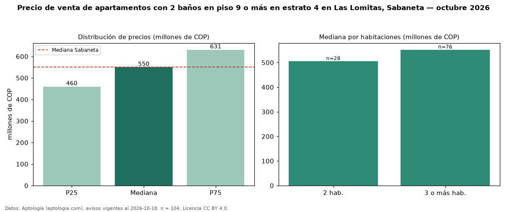

Precio de venta de apartamentos con 2 baños en piso 9 o más en estrato 4 en Las Lomitas, Sabaneta — octubre 2026
En Las Lomitas, Sabaneta, la mediana de precio de venta de apartamentos con 2 baños en piso 9 o más en estrato 4 es COP 550 millones, según 104 avisos vigentes. Frente a la mediana de los apartamentos con 2 baños en estrato 4 en venta de Las Lomitas (COP 585 millones, n = 282), queda 6 % por debajo; este segmento reúne el 37 % de esos avisos. Por metro cuadrado, la mediana es COP 7,22 millones/m² (n = 104), 0 % por debajo de los apartamentos con 2 baños en estrato 4 en venta de Las Lomitas (COP 7,25 millones/m²). El área mediana anunciada es 76 m². El segmento con más oferta es el de 3 o más habitaciones (76 avisos, mediana COP 552 millones); pasar de 2 habitaciones a 3 o más habitaciones cambia la mediana +9 %. La administración mediana declarada es COP 378.031 al mes (n = 86). La mediana de todos los apartamentos en venta de Sabaneta es COP 550 millones (+0 % de diferencia). 93 % de los avisos con el dato declara parqueadero. Datos: Aptología (aptologia.com), CC BY 4.0 — https://www.aptologia.com/venta/sabaneta/las-lomitas. Archivos: PDF, CSV con las cifras y gráfica PNG.

| Avisos únicos | 104 |
|---|---|
| Percentil 25 | COP 460.000.000 |
| Mediana | COP 550.000.000 |
| Percentil 75 | COP 631.000.000 |
| Mediana por m² | COP 7.223.077 |
Fuente: avisos vigentes de portales inmobiliarios recopilados por Aptología, deduplicados (mínimo 30 avisos únicos por celda). Precios pedidos, no cerrados. Fecha: 2026-10-18.